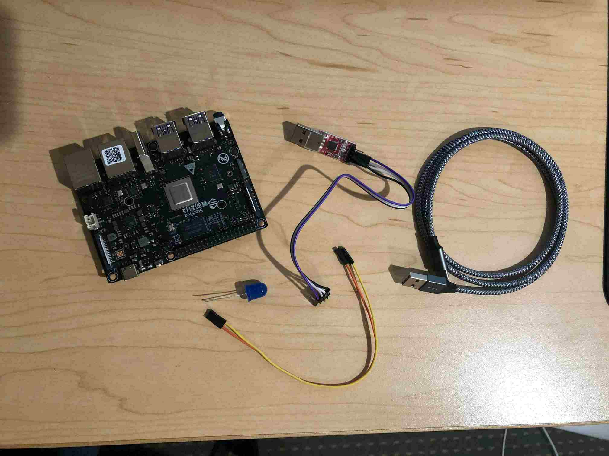
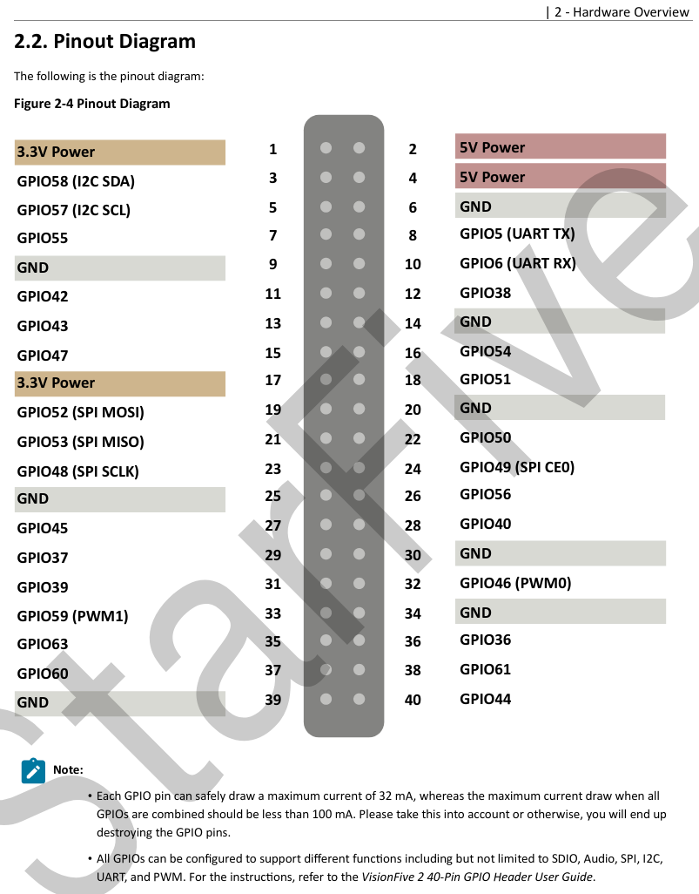
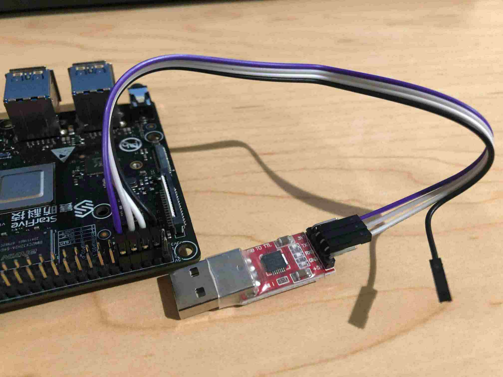
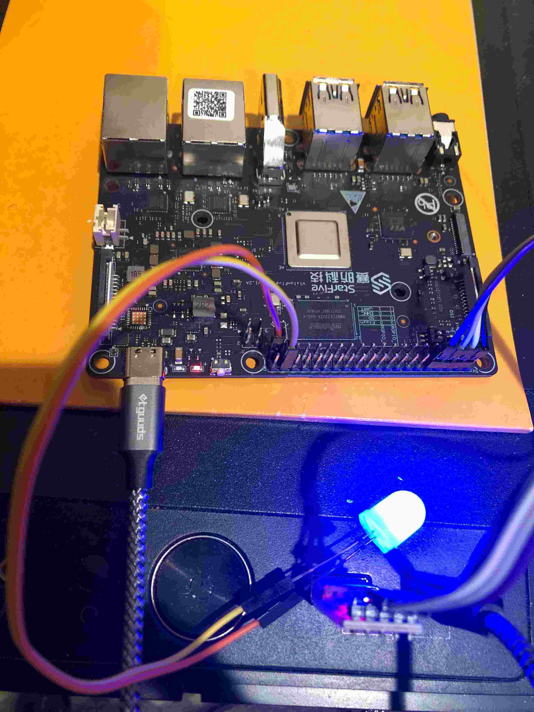

This is a follow-up to my previous post about writing bare-metal RISC-V programs using D. This time we’ll get our code running on actual hardware. We’ll be using the VisionFive 2 board, a recently released RISC-V SBC with 4 application cores (SiFive U74) clocked at a maximum of 1.5 GHz1 and 1 monitor core (SiFive S7). The main difference between the U74 cores and the S7 core is that the S7 core does not have an MMU, and therefore cannot support virtual memory – but that won’t be relevant to us today.
We’ll figure out how to get our code running on the VisionFive 2 bare-metal, and then implement small UART and GPIO drivers to print messages over a serial connection and blink an LED.
The code for this post is available in my blog-code repository. For a more complex example, see Multiplix, an operating system I am developing that runs on the VisionFive 2 (and Raspberry Pis).
Setup
If you want to follow along, you’ll need the following hardware:
- A VisionFive 2 board (with a USB-C cable to power it).
- A USB to UART converter.
- An LED.

You’ll also need the following software:
- LDC 1.30 and a GNU toolchain (same as last time).
- The
sxprogram for loading files over XMODEM. - The
mkimagetool from U-boot for creating a firmware image file. - A few tools I have written to make things easier. You can get them from my
blog-code repository.
rduart: a program that reads from a serial device on your host computer.vf2-imager: a program that converts a.binfile to a VisionFive 2 firmware image.vf2: a program that sends a VisionFive 2 firmware image to the board and automatically navigates the menus to upload it correctly.
You’ll need Go to install the custom tools I’ve written. To build them, run go build (or go install to install to your GOBIN) in each tool directory.
Installing custom firmware
Before writing your own code, it’s a good idea to check that you can properly install a new firmware image on the VisionFive 2. Note: this will overwrite your previous firmware. If you want to go back to running Linux, see the end of this article for instructions for re-installing the default firmware.
Here is the final .bin file you should be able to build after this post:
prog.bin.
To install this binary file, we need to create the firmware image file from it.
This can be done with my vf2-imager tool, which just invokes U-boot’s
mkimage tool with the right inputs:
$ vf2-imager -i prog.bin -o prog.img
Now we need to upload that image file. The VisionFive 2 quick start guide has a section that describes how to recover the bootloader (firmware) in the case that your board’s flash has been overwritten or corrupted (Appendix 4.4). This describes how to re-upload the default firmware, but we can follow these instructions to upload custom firmware. First, connect the USB-UART converter to the board. You can refer to the pinout diagram from the datasheet:

Connect ground to ground, TX to RX, and RX to TX. Leave power unconnected since the board will be powered via the USB-C cable.

Once you have the USB-UART converter set up, and the board is powered on by plugging in the USB-C cable, you can install new firmware. Here’s an overview of the steps. You don’t have to go through them manually because I’ve written a tool to do them automatically, but it’s good to know what they are.
- Flip the boot-mode switches on the board. These switches are really small, so I usually use the legs of the LED to help flip them.
- Restart the board (unplug and re-plug the USB-C cable, or press the restart button on the side of the board).
- Send the
jh7110-recovery.binfile usingsx. This is a program distributed by StarFive that loads firmware, so we are sending it so that it can run on the board and load the actual firmware. - Once the transfer is complete a menu will appear asking what kind of
firmware update is desired. We want option 2:
update fw_verify/uboot in flash. - Send the
vf2-hello.imgfile usingsx. - Flip the switches back and restart the board.
That’s a lot of steps! Luckily I’ve written a program called vf2 that does it
all automatically for you (except flipping the switches). So you just run
$ vf2 prog.img
and wait for it to finish. Once complete, flip the switches, start running
rduart to read from the UART, and restart the board. Hopefully you’ll see
“blink: on”/“blink: off” appear on the screen (and if you plug your LED into
pin 61, the LED should blink).
A new entrypoint
Now let’s start writing code. We can pick up where we left off from last post.
One difference between the VisionFive 2 and QEMU is that the entrypoint on the
VisionFive 2 is 0x40000000 instead of 0x80000000, so we have to change that
address in the link.ld file (full
link.ld).
Disabling the additional cores
The VisionFive 2 has five cores in total, and they all jump to the CPU
entrypoint concurrently. For this simple example, we are going to disable all
cores except one so that we don’t have to deal with writing parallel-safe code.
Each core’s ID is stored in the mhartid CSR. The S7 monitor core is ID 0, and
the four U7 application cores are IDs 1-4. Let’s boot up with only core 1 by changing
start.s:
.section ".text.boot"
.globl _start
_start:
csrr t0, mhartid
li t1, 1
bne t0, t1, _hlt # branch to _hlt if mhartid != 1
la sp, _stack_start
call dstart
_hlt:
wfi
j _hlt
Blinking an LED
In order to blink an LED we have to be able to delay for a certain amount of
time and toggle a GPIO pin. The simplest way to delay is just to execute a
large number of nop instructions. We are going to use the slightly more
complex method of accessing the system time register so that we can reliably
wait for a precise amount of time.
While most of the VisionFive 2’s device are undocumented, there is a Linux device tree for the board, so we can look at that to get some information about the devices on the board and their locations in the memory map. This will be useful for writing simple GPIO and UART drivers. You can find the device tree here: jh7110.dtsi.
Accessing the system timer
The VisionFive 2 uses a SiFive U74 core complex. This has a SiFive core-local
interrupt controller (CLINT) located at address 0x200_0000. Within the CLINT
there is the memory-mapped mtime register – a 64-bit register that
increments at a fixed frequency. The RISC-V specification says that the
implementation must provide a way to determine the frequency of the timer, but
on the VisionFive 2 I haven’t found any way (doesn’t seem to be documented?).
Via experimentation, I estimate that the timer runs at 4.0 MHz (consistent with
the Linux kernel
patch).
The mtime
register is mapped at an offset of 0xBFF8 within the CLINT. See the SiFive
manual
for the documentation.
We can make a simple timer module that uses this memory-mapped timer to delay for a certain number of microseconds.
module timer;
struct Timer {
static ulong mtime() {
return volatileLoad(cast(ulong*) (0x200_0000 + 0xBFF8));
}
enum mtime_freq = 4_000_000;
static void delay_time(ulong t) {
ulong rb = mtime;
while (true) {
ulong ra = mtime;
if ((ra - rb) >= t)
break;
}
}
static void delay_us(ulong us) {
delay_time(us * mtime_freq / 1_000_000);
}
}
Note for those unfamiliar with D: this code uses some of D’s uniform function
call syntax (UFCS), to call the mtime function without using parentheses.
GPIO driver
Toggling a GPIO pin requires controlling the GPIO device. The VisionFive 2 is not very well documented at the moment, and I cannot find any documentation for the GPIO device. However, there is a Linux kernel driver (patch), and I’ve pulled out just the part for turning a pin on or off.
The GPIO device on the VisionFive 2 has 16 4-byte enable registers at offset
0x0 and 16 4-byte output value registers at offset 0x40. Each register
contains the enable/output value for 4 pins, split across the 4 bytes of the
register. This allows control of 64 pins in total. The enables are active-low.
To turn on GPIO pin n you have to:
- Enable the pin: find register
en[n / 4]and within it clear the bottom 6 bits of byten % 4. - Turn on the pin’s output: find register
out[n / 4], and within it set the bottom 7 bits of byten % 4to0b0000001.
module gpio;
struct Jh7110Gpio(uintptr base) {
enum doen_reg = cast(uint*)(base + 0x0);
enum dout_reg = cast(uint*)(base + 0x40);
enum dout_mask = 0x7f;
enum doen_mask = 0x3f;
static void set(uint pin) {
if (pin > 63) {
return;
}
uint offset = pin / 4;
uint shift = 8 * (pin % 4);
uint dout = volatileLoad(&dout_reg[offset]);
uint doen = volatileLoad(&doen_reg[offset]);
volatileStore(&dout_reg[offset], dout & ~(dout_mask << shift) | (1 << shift));
// enable is active low
volatileStore(&doen_reg[offset], doen & ~(doen_mask << shift));
}
static void clear(uint pin) {
if (pin > 63) {
return;
}
uint offset = pin / 4;
uint shift = 8 * (pin % 4);
uint dout = volatileLoad(&dout_reg[offset]);
volatileStore(&dout_reg[offset], dout & ~(dout_mask << shift));
}
static void write(uint pin, bool value) {
if (value) {
set(pin);
} else {
clear(pin);
}
}
}
alias Gpio = Jh7110Gpio!(0x13040000);
By looking at the JH7110 device tree, we can see that the GPIO device is
located at address 0x13040000:
gpio: gpio@13040000 {
compatible = "starfive,jh7110-sys-pinctrl";
reg = <0x0 0x13040000 0x0 0x10000>;
...
};
So let’s add:
alias Gpio = Jh7110Gpio!(0x13040000);
Blink!
Now we have everything necessary to toggle a pin in kmain:
module main;
import gpio;
import timer;
void kmain() {
bool val = true;
enum pin = 61;
while (true) {
Gpio.write(pin, val);
val = !val;
// delay 500 ms
Timer.delay_us(500 * 1000);
}
}
Build this into a .bin file, and use vf2-imager and vf2 to flash it
onto the VisionFive 2.
Now connect an LED to GPIO61 (and the other end to GND), and you should see it blinking! (if it doesn’t work, try flipping the ends of the LED – LEDs usually have a polarity)

A small UART driver
Most devices on the VisionFive 2, including the UART, are not documented very well. Luckily the Linux device tree for it is quite fleshed out, and has an entry for the UART.
uart0: serial@10000000 {
compatible = "snps,dw-apb-uart";
reg = <0x0 0x10000000 0x0 0x10000>;
...
};
The VisionFive 2 UART is apparently compatible with the Synopsys DW8250 UART device, which does have a manual available online2. Just like with the default QEMU UART from last post, the transmit register on this UART device is the first register in the list. It also turns out that the firmware initializes the device to run at a baud rate of 115200, so we don’t even have to figure out how to configure the clocks. One difference between the QEMU UART and the real UART is that it takes some time for the data to be transmitted out of the transmit register, so before writing to the transmit register we have to wait for it to be empty. The “line status register” can report this information.
module uart;
struct Dw8250(uintptr base) {
// Line status register
static uint lsr() {
enum off = base + 0x14;
return volatileLoad(cast(uint*) off);
}
// Transmit holding register
static void thr(uint b) {
enum off = base + 0x0;
volatileStore(cast(uint*) off, b);
}
enum Lsr {
thre = 5, // bit 5 of LSR is set if the THR is empty
}
static void tx(ubyte b) {
// wait for THR to be empty
while (((lsr >> Lsr.thre) & 1) != 1) {
}
thr = b;
}
}
alias Uart = Dw8250!(0x10000000);
Note for those unfamiliar with D: this code is using UFCS where lsr is a call
to lsr() and thr = b is a call to thr(b).
Printing over the UART
Now we can add to our blink program:
module main;
import gpio;
import timer;
void kmain() {
bool val = true;
enum pin = 61;
while (true) {
// We can re-use the println implementation from last post
println("blink: ", val ? "on" : "off");
Gpio.write(pin, val);
val = !val;
// delay 500 ms
Timer.delay_us(500 * 1000);
}
}
If you run rduart, you should see the text printed over the serial
connection.
Re-installing the default firmware
Re-installing the default firmware is quite easy. You just need to get the
default .img file and flash it using the vf2 tool.
The default firmware image is visionfive2_fw_payload.img and can be
downloaded from
starfive-tech/VisionFive2.
Flashing the firmware will take roughly 10 minutes.
Final remarks
It’s always fun getting code running bare-metal on actual hardware. The next
step might be to implement a UART bootloader so you don’t have to use the vf2
tool (and flip the switches) to upload new programs. You can upload the
bootloader once and then have it poll for a new program to load over UART.
Another next step might be to enable more hardware features, such as the MMU
(for virtual memory) or interrupts. See
Multiplix for a small example kernel
that runs on the VisionFive 2 that I am developing.
When running bare-metal you can also make really effective micro-benchmarks –
for example determining exactly how many cycles it takes to execute a system
call instruction(ecall in RISC-V)3. I might make a blog post about that in
the future.
Unfortunately the devices on the VisionFive 2 are not documented very well, so making controllers for the more advanced devices on the board seems impractical. I’m hoping the HiFive Pro will have better documentation, but it doesn’t seem very likely. Nevertheless, UART and GPIO devices are enough to make some interesting programs.